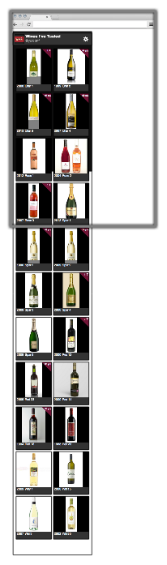

-
 Diego Ferreiro
Diego Ferreiro
- Yahoo! Alumni
- UI & web performance engineer at Salesforce
- Wine lover
-
 Norbert Hu
Norbert Hu
- Microsoft Alumni
- Backend and performance engineer at Foursquare
- Wine lover
Who we are
Dude, wouldn't be awesome to be able to share all this wines with people so they can be as drunk and happy as we are?
... Let's make people drunk!, I mean, happy!
app.pinobuzz.com
user: yuiconf | password: 2013
Pino in a nutshell
-
Create visual appealing UI to organize your wine collections
- Performant scroller for list views
- Lazyload & cache images and data
-
Ability to add, share and like easily the wines around your circles
- Capture and manipulate images on the client
- Be able to access from as many devices as possible
- Has to be fast!
- One page app
- #perfmatters
Choosing the Technology
Decisions, Decisions, Decisions.


Hybrid Approach
PhoneGap Build

Building blocks
Client side Architecture
The client blocks
The goodness of YUI and YAF
-
Dependency Management
- Combo load dependencies depending on the context (hybrid/web)
- Lazy load dependencies as needed
-
Event driven architecture
- Loose coupling of Views, Templates and Models
- YUI 3.11: Noticeable improvements in performance
-
Memory footprint
- Allocate once and reuse instances to avoid GC
- Trivial Module Override/Extend
- Needed ScrollView or Animations adhoc for our use case
What about the Server?
Google AppEngine

- Datastore
- Blobstore
- Memcache
- Image Service / CDN
- Auto-scaling Instances
Rendering performance
The good, the bad and the ugly
Rendering performance (I): The ugly
- YAF Built in transitions
.yui3-app-transitioning .yui3-app-views > *,
.yui3-app-views.yui3-app-transitioning > * {
display: inline-block;
letter-spacing: normal;
word-spacing: normal;
vertical-align: top;
text-rendering: auto;
width: 100%;
white-space: normal;
-webkit-box-sizing: border-box;
-moz-box-sizing: border-box;
box-sizing: border-box;
}
Rendering performance (II): The bad
-
In native we run in a sandbox (within a webView)
- Every operation has an overhead
- Bad layering or expensive paints can easily cause jank or flickering
-
We need to handoff as much work as possible to the GPU
- Too many GPU layers will saturate the bus (flicker)
- Too big layers will cause jank
Rendering performance (II): The bad
translate3d() all things? GPU to the rescue?
Rendering performance (III): The good
Debugging all the things!
- Identify unnecesary paints and reflows
- Identify the bottlenecks
- Identify composited layers and GPU processing
- Let's debug a little bit!
Image Manipulation
Camera & Canvas
- Camera: HTML5 & native plugin
- Draw photo onto canvas
- User manipulates image on canvas
- Convert canvas into blob
- Upload blob to server
Image Manipulation
Pinch-Zoom & Pan-Move

console.log('Q & A') ||
alert('Drop us an email');